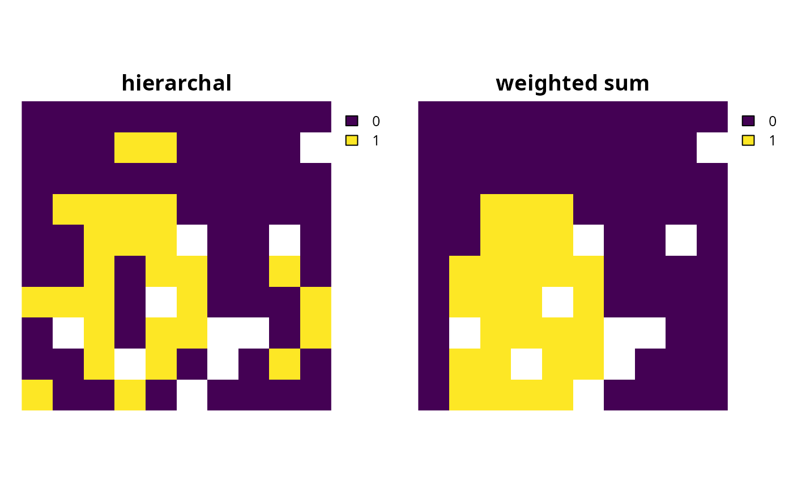

An approach can be added to a multi-objective conservation planning problem to specify the multi-objective optimization algorithm for generating solutions (Jaimes et al. 2009).
Details
Multi-objective optimization approaches can be used to identify
solutions that achieve multiple criteria (Jaimes et al. 2009).
For example, these approaches can help inform multi-use planning, where
land use decisions must conserve biodiversity, meet food demands, and provide
adequate housing supply (Neubert et al. 2025).
These approaches can also be used to accommodate
trade-offs between competing conservation objectives, such as
representing multiple different conservation features
(Deléglise et al. 2024) or
minimizing multiple different cost datasets (Schuster et al. 2023).
The following functions can be used to add an approach for multi-objective
optimization to a multi-objective conservation planning multi_problem().
In general, we recommend using the relative constraint approach
(add_rel_constraint_approach()) because it is better able to generate
distinct solutions.
Although the weighted sum approach (add_wtd_sum_approach()) is
conceptually easier to understand, it can be challenging to use in practice
because it is sensitive to scaling issues—meaning that practitioners will
often have to (i) consider a large number of combinations of weights to
obtain a diverse set of solutions and (ii) perform multiple calibration
procedures to manually identify weight parameter values that result in
different solutions (Das and Dennis 1997).
add_rel_constraint_approach()Add an approach that involves solving each
problem()in amulti_problem()object in a hierarchical (lexicographic) manner, wherein those associated with a higher priority order are solved before those with a lower priority order. Relative tolerance parameters can also be used to allow the optimization process to degrade objectives (in other words, allow for more wiggle room) so that subsequent (lower priority) objectives can be better achieved.add_wtd_sum_approach()Add an approach that involves combining the objective functions associated with
problem()in amulti_problem()object into a single new objective, wherein weights are used to specify the relative importance of each objective.
Note that although multi-objective approaches can be used to generate
multiple solutions, they are conceptually different to
methods for generating portfolios of solutions
(see portfolios for details).
This is because methods for generating solution portfolios
identify multiple solutions that represent alternative spatial configurations
for achieving the same particular objective
(e.g., minimizing cost per add_min_set_objective()).
Conversely, multi-objective approaches generate a single solution
based on a set of parameters (e.g., weight or relative tolerance parameters)
that specify trade-offs among multiple different objectives
(e.g., minimizing cost per add_min_set_objective() and minimizing
shortfalls in feature representation per add_min_shortfall_objective()).
By specifying multiple sets of trade-off parameters, multi-objective
approaches can be used to generate multiple solutions that represent
different levels of compromise among the multiple objectives.
References
Das I and Dennis JE (1997) A closer look at drawbacks of minimizing weighted sums of objectives for Pareto set generation in multicriteria optimization problems. Structural Optimization, 14: 63–69.
Deléglise H, Justeau-Allaire D, Mulligan M, Espinoza J-C, Isasi-Catalá E, Alvarez C, Condom T, and Palomo I (2024) Integrating multi-objective optimization and ecological connectivity to strengthen Peru's protected area system towards the 30*2030 target. Biological Conservation, 299: 110799.
Jaimes AL, Saúl ZM, and Coello Coello CA (2009) An introduction to multiobjective optimization techniques in Optimization in Polymer Processing. Eds Gaspar-Cunha A and Covas JA. Nova Science Publishers Inc, New York, United States.
Neubert S, McGowan J, Metcalfe K, Hanson JO, Buenafe KCV, Dabalà A, Dunn DC, Everett JD, Possingham HP, Stelzenmüller V, Estep A, Ervin J, and Richardson AJ (2025) Multiple-use spatial planning for sustainable development and conservation. Trends in Ecology and Evolution, 40: 1126–1142.
Schuster R, Buxton R, Hanson JO, Binley AD, Pittman J, Tulloch V, La Sorte FA, Roehrdanz PR, Verburg PH, Rodewald AD, Wilson S, Possingham HP, and Bennett JR (2022) Protected area planning to conserve biodiversity in an uncertain future. Conservation Biology, 37: e14048.
See also
Other overviews:
constraints,
decisions,
importance,
objectives,
penalties,
portfolios,
solvers,
summaries,
targets
Examples
# \dontrun{
# in this example, we aim to identify a set of planning units that will
# not exceed a particular budget and meet objectives for
# (i) representing species that are important for ecosystem
# functioning (hereafter, keystone species) and (ii) representing species
# that have high social or cultural value (hereafter, iconic species)
# import data
con_cost <- get_sim_pu_raster()
keystone_spp <- get_sim_features()[[1:3]]
iconic_spp <- get_sim_features()[[4:5]]
# define a total conservation budget (30% of total cost)
budget <- terra::global(con_cost, "sum", na.rm = TRUE)[[1]] * 0.3
# now create multi-objective problem
mp <-
multi_problem(
keystone_obj =
problem(con_cost, keystone_spp) %>%
add_min_shortfall_objective(budget) %>%
add_relative_targets(0.4) %>%
add_binary_decisions(),
iconic_obj =
problem(con_cost, iconic_spp) %>%
add_min_shortfall_objective(budget) %>%
add_relative_targets(0.2) %>%
add_binary_decisions()
) %>%
add_default_solver(gap = 0, verbose = FALSE)
# create multi-problem with relative constraint approach
mp1 <-
mp %>%
add_rel_constraint_approach(rel_tol = c(0.1, 0), verbose = FALSE)
# create multi-problem with weighted sum approach,
mp2 <-
mp %>%
add_wtd_sum_approach(weights = c(0.9, 0.1), verbose = FALSE)
# solve problems
s <- c(solve(mp1), solve(mp2))
names(s) <- c("relative constraint", "weighted sum")
# plot solutions
plot(s, axes = FALSE)

# }